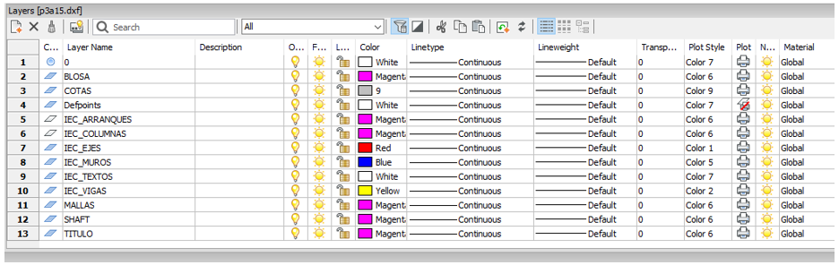
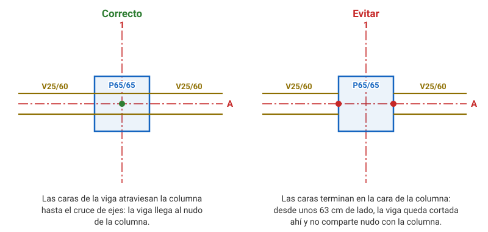

Prepinchado
El prepinchado prepara los planos de planta del calculista para que dxftoedb los lea:
cada elemento estructural se mueve a una capa _IEC_* y se dibuja con el tipo de
entidad que esa capa espera. Lo que no está en esas capas no se lee, y lo que está mal
dibujado se descarta, a veces con aviso y a veces sin él. Por eso esta página detalla la
regla de cada tipo de elemento.
Resumen de capas
| Capa | Qué va | Entidades que se leen | Resultado |
|---|---|---|---|
_IEC_EJES |
ejes y sus nombres | LINE + TEXT | grilla del modelo |
_IEC_MUROS |
caras de los muros | LINE | muros (áreas) |
_IEC_VIGAS |
caras de las vigas y sus rótulos | LINE + TEXT | vigas (frames, o áreas si son peraltadas) |
_IEC_COLUMNAS |
contorno de las columnas y su rótulo (opcional) | polilínea cerrada o 4 LINE + TEXT | columnas (frames verticales) |
_IEC_ARRANQUES |
arranques | LINE | solo referencia, no se modela |
_IEC_BLOSA |
borde de losa | LINE y ARC | solo referencia, no se modela |
_IEC_HOYOS |
perforaciones de losa | LINE | solo referencia, no se modela |
Estos son los nombres por defecto. Si los planos traen otras capas, se pueden declarar en el archivo de configuración (ver Configuración avanzada).
Reglas generales del dibujo
- Unidades: centímetros. Todas las tolerancias de esta página están en cm, y dxftoedb pasa las coordenadas a metros dividiendo por 100.
- Origen común: todas las plantas con el mismo origen de coordenadas.
- Textos: solo TEXT (texto de una línea). No se leen los MTEXT ni los atributos de bloque: hay que explotar los MTEXT y, si un nombre viene dentro de un bloque (p. ej. la pelota del eje), reescribirlo como TEXT.
- Líneas: solo LINE, salvo en columnas. Las polilíneas de ejes, muros, vigas, arranques, borde de losa y perforaciones se explotan. Las de columnas no.
- Duplicados: ejecutar
OVERKILLtantas veces como haga falta, hasta que no elimine nada. - Tipo de línea: no importa; dxftoedb1 lo normaliza.
- Capas de arquitectura: se borran por limpieza. dxftoedb1 deja encendidas en el
_grillasolo las capasIEC_*que crea y apaga todas las demás, incluidas las_IEC_*, pero un plano limpio se revisa mejor. - Un DXF por planta, guardado como AutoCAD 2010 ASCII DXF.
- Nombre de archivo: el mismo que figura en la 3ª columna de
[Stories].Data(ver Configuración). Convención: pisosP01,P02,P10; subterráneosS01,S02; salas de máquinasSM1,SM2; niveles en cotas especialesN01,N05.
Flujo de trabajo
- Se reciben los planos en formato DWG.
- Se envían al ingeniero o la ingeniera a cargo, que define los elementos a considerar. En épocas de alta demanda, si no se conoce el destinatario, un responsable apoya con los criterios de prepinchado.
- Se insertan todas las plantas en una hoja base de BricsCAD, con el mismo origen.
-
Se crean las capas
_IEC_*del resumen. El resto de las capas no se modifica.
-
Se mueven las entidades a esas capas según las reglas de cada elemento, en las secciones siguientes. Lo que no corresponde se deja donde está (no se borra).
- Se limpia: explotar polilíneas y MTEXT (excepto columnas),
OVERKILLy borrar las capas de arquitectura. - Se revisan los ejes (ver Ejes).
- Se guarda cada planta como un DXF separado.
- Se comprueba el resultado con dxftoedb1 y dxftoedb2 (ver Comprobar el prepinchado).
Ejes
- Capa
_IEC_EJES: la línea del eje (LINE) y su nombre (TEXT). Las pelotas (círculos) no se leen; se pueden mover o dejar. - Una sola línea recta por eje. Eliminar los quiebres y dejar el nombre en la línea principal.
- El punto de inserción del nombre va sobre un extremo de la línea (a menos de 2 cm). Si no, el eje toma el nombre más cercano, y en zonas con muchos ejes eso puede cruzar los nombres.
- Las líneas de eje de 101 cm o menos se descartan. Se miden una por una, antes de unir los tramos colineales: un eje dibujado en trozos pierde los trozos cortos.
- Todo muro y toda viga necesita un eje que pase por su centro (ver Muros).
Si falta, crear uno y nombrarlo con
#más un número correlativo:#1,#2,#3. Las columnas no necesitan eje. - Se recomienda armar una planta aparte con todos los ejes, los existentes y los
creados, y declararla como
archivo_ejes(ver Configuración).
Muros
- Capa
_IEC_MUROS: las dos caras del muro, como LINE. - El espesor es la distancia entre las caras. Los textos de muros no se leen: se pueden mover o dejar.
- El eje pasa por el centro del muro, entre las dos caras y paralelo a ellas (se toleran 5°).
- Cada cara a no más de 30 cm del eje. Un muro centrado en su eje se detecta hasta 60 cm de espesor; uno más grueso desaparece sin aviso y hay que agregarlo a mano en el plano de la etapa 2.
- Un muro excéntrico (el eje no pasa por su centro) sale con espesor errado o
desaparece. En ese caso se crea un eje propio por el centro del muro (
#n). - La línea del eje debe cubrir todo el largo del muro (se toleran 30 cm de exceso en cada punta).
- Las caras de 40 cm o menos no se consideran.
- No es necesario cortar las caras en las intersecciones con otros elementos.
- Muros de espesor variable: cortar las caras en cada cambio de espesor.
- Los pilares no van en esta capa: ver Columnas.
Vigas
- Capa
_IEC_VIGAS: las dos caras de la viga (LINE) y su rótulo (TEXT). - Las caras siguen las mismas reglas de eje que los muros: el eje pasa por el centro, las caras son paralelas a él, cada una a no más de 30 cm, y el eje cubre todo el largo.
-
La sección sale del rótulo, no del ancho dibujado. El rótulo lleva letras y luego
ancho/alto, en cm:Rótulo Viga V20/50normal: 20 de ancho y 50 de alto bajo la losa VI20/50oV.I20/50invertida: 50 de alto sobre la losa VSI20/40+30semi-invertida: 40 bajo la losa y 30 sobre ella El hormigón no va en el rótulo: se agrega el del piso. Un rótulo sin letras antes del ancho (
20/50) o conx(V20x50) no se reconoce: la viga aparece en el plano de la etapa 2, pero la etapa 4 no la modela y no avisa. Corregir el rótulo en la etapa 2. -
Un rótulo por tramo. Un tramo es la viga entre dos cruces con otros muros o vigas. Cada tramo toma el rótulo más cercano a su punto medio, hasta 1,5 m: poner el punto de inserción cerca de ese punto medio. Un tramo sin rótulo a menos de 1,5 m sale como
V. 99.9/99.9y hay que corregirlo en la etapa 2. - Vigas anchas: cortarlas frente a los muros.
- Vigas que llegan a una columna: las caras se dibujan hasta el cruce de ejes, atravesando la columna (ver Vigas que llegan a una columna).
Columnas
Las columnas se modelan como frames verticales con sección rectangular. A diferencia de muros y vigas, no dependen de los ejes: la posición, las dimensiones y la orientación salen del rectángulo dibujado.
Cómo dibujarlas
- Capa
_IEC_COLUMNAS. - Contorno: un rectángulo cerrado, de una de estas dos formas:
- Polilínea cerrada de 4 vértices (lo recomendado: el comando
RECTANGla deja así). Sin arcos y sin vértices intermedios. Si no está marcada como cerrada, su último vértice tiene que repetir el primero. - 4 LINE cuyos extremos coinciden: se dan por coincidentes si, redondeados al centímetro, caen en el mismo punto, así que una separación de décimas de centímetro puede bastar para que el contorno no cierre.
- Polilínea cerrada de 4 vértices (lo recomendado: el comando
- Lados opuestos iguales y esquinas a 90° (tolerancia de 1 cm). Lado mínimo: 10 cm.
- Puede estar girada respecto de los ejes globales: el ángulo se mide del dibujo y se asigna en ETABS como ejes locales.
- Rótulo opcional: un TEXT que contenga
Py/(p. ej.P65/65), con el punto de inserción dentro del rectángulo. El rótulo no define la sección; si sus dos números no coinciden con lo medido, dxftoedb2 avisa. - Se dibuja en cada planta. La columna dibujada en el plano de un piso va desde la cota del piso de abajo hasta la de ese piso, igual que los muros. Una columna que sube 10 pisos se dibuja en las 10 plantas.
Con 4 líneas, una esquina abierta anula la columna sin aviso
Si los extremos de dos líneas no coinciden (ver arriba) o hay otra línea de la capa tocando una esquina (una diagonal, una cruz o una cota), el contorno no cierra y la columna se ignora sin aviso. Por eso se recomienda la polilínea cerrada: deja la capa limpia y, si algo falla, siempre avisa.
Qué sale en el modelo
- Sección
P{b}/{h}más el hormigón del piso (4ª columna de[Stories].Data), p. ej.P30/65G30.bes el lado más cercano a la dirección X (eje local 2) yhel otro (eje local 3). Las medidas se redondean al centímetro. - Si el mismo pilar está dibujado dos veces (polilínea y 4 líneas), se modela una sola vez.
Vigas que llegan a una columna

Las caras de la viga se dibujan hasta el cruce de ejes, atravesando la columna. Si se cortan en la cara de la columna, dxftoedb alarga el extremo hasta el cruce cuando la cara está a menos de 31 cm de él (columnas de menos de 62 cm centradas en el cruce). En una columna más grande, la viga queda cortada en la cara y no comparte nudo con la columna en ETABS.
Si la columna no está en un cruce de ejes (p. ej., a media luz de una viga), dxftoedb no corta la viga en la columna: esa conexión hay que revisarla en ETABS.
Lo que no se modela
- Columnas circulares (círculo, arco o elipse): no se modelan; se avisan y se omiten (ver Columnas circulares).
- Polilíneas con arcos y polígonos no rectangulares (L, T, etc.): se avisan y se omiten.
- Pilares dibujados en
_IEC_MUROS: no son columnas. Si un eje los atraviesa y tienen un lado de más de 40 cm, el algoritmo de muros toma sus caras como un muro y genera fragmentos del porte del pilar. dxftoedb2 avisa cuántos hay por planta.
Columnas circulares
dxftoedb1 pasa a la capa IEC_COLUMNAS del _grilla los círculos, arcos y elipses de
_IEC_COLUMNAS junto con las LINE y las polilíneas, y dxftoedb2 avisa de cada uno con
columna circular (no soportada todavia) y su ubicación. Esas columnas no llegan al
modelo: hay que modelarlas a mano en ETABS. Un arco de _IEC_BLOSA no se ve afectado
(es borde de losa).
Avisos de la etapa 2
dxftoedb2 imprime una línea AVISO columnas [planta] (x, y): motivo por cada forma que
no pudo modelar, con las coordenadas en metros:
| Motivo | Causa | Qué hacer |
|---|---|---|
polilinea con arcos (bulge) |
la polilínea tiene arcos o está abierta | redibujarla con RECTANG, o cerrarla |
poligono de N vertices, no es rectangulo |
vértices de más, lados desiguales, esquinas que no son rectas o un lado de menos de 10 cm | redibujarla como un rectángulo de 4 vértices |
ciclo de N lineas, no es rectangulo |
las líneas cierran, pero no forman un rectángulo | redibujarla |
columna circular (no soportada todavia) |
círculo, arco o elipse en la capa de columnas (ver Columnas circulares) | modelarla a mano en ETABS |
rotulo 'X' no coincide con lo medido (bxh) |
el rótulo no calza con el dibujo | corregir el dibujo o el rótulo (la sección sale de lo medido) |
N rectangulos cerrados en IEC_MUROS parecen columnas |
pilares en la capa de muros | moverlos a _IEC_COLUMNAS |
Arranques, borde de losa y perforaciones
_IEC_ARRANQUES(LINE),_IEC_BLOSA(LINE y ARC) y_IEC_HOYOS(LINE).- No se modelan. Se copian al plano de la etapa 2 como referencia para dibujar las losas en la etapa 3.
- Los textos y los achurados de arranques no se leen; moverlos es opcional.
Comprobar el prepinchado
- dxftoedb1: revisar que la grilla tenga todos los ejes con su nombre correcto (ver Planos Grilla y Grilla Excel).
- dxftoedb2: en cada plano
_dxftoedb, revisar que estén todos los muros (MUROS_etabs), las vigas (VIGAS_etabs) y las columnas (COLUMNAS_etabs), y leer losAVISOde la consola (ver Dxftoedb2). Las fallas típicas:- Falta un muro: no tiene eje, el eje no pasa por su centro o tiene más de 60 cm de espesor.
- Falta una viga: no tiene eje. Una viga con un rótulo que no se reconoce sí aparece
en
VIGAS_etabs, pero la etapa 4 no la modela y no avisa: revisar el formato de los rótulos. - Una viga dice
V. 99.9/99.9: a ese tramo le falta un rótulo a menos de 1,5 m. - Falta una columna dibujada con 4 líneas: una esquina no cierra.